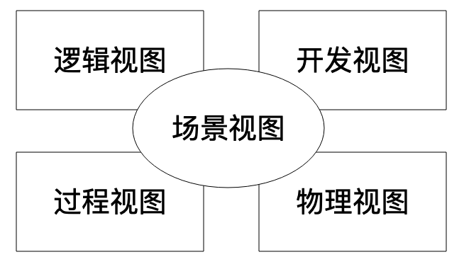

- 00 开篇词 掌握软件开发技术的第一性原理.md
- 01 程序运行原理：程序是如何运行又是如何崩溃的？.md
- 02 数据结构原理：Hash表的时间复杂度为什么是O(1)？.md
- 03 Java虚拟机原理：JVM为什么被称为机器（machine）？.md
- 04 网络编程原理：一个字符的互联网之旅.md
- 05 文件系统原理：如何用1分钟遍历一个100TB的文件？.md
- 06 数据库原理：为什么PrepareStatement性能更好更安全？.md
- 07 答疑 Java Web程序的运行时环境到底是怎样的？.md
- 07 编程语言原理：面向对象编程是编程的终极形态吗？.md
- 08 软件设计的方法论：软件为什么要建模？.md
- 09 软件设计实践：如何使用UML完成一个设计文档？.md
- 10 软件设计的目的：糟糕的程序员比优秀的程序员差在哪里？.md
- 11 软件设计的开闭原则：如何不修改代码却能实现需求变更？.md
- 12 软件设计的依赖倒置原则：如何不依赖代码却可以复用它的功能？.md
- 13 软件设计的里氏替换原则：正方形可以继承长方形吗？.md
- 14 软件设计的单一职责原则：为什么说一个类文件打开最好不要超过一屏？.md
- 15 软件设计的接口隔离原则：如何对类的调用者隐藏类的公有方法？.md
- 16 设计模式基础：不会灵活应用设计模式，你就没有掌握面向对象编程.md
- 17 设计模式应用：编程框架中的设计模式.md
- 18 反应式编程框架设计：如何使程序调用不阻塞等待，立即响应？.md
- 19 组件设计原则：组件的边界在哪里？.md
- 20 答疑 对于设计模式而言，场景到底有多重要？.md
- 20 领域驱动设计：35岁的程序员应该写什么样的代码？.md
- 21 分布式架构：如何应对高并发的用户请求.md
- 22 缓存架构：如何减少不必要的计算？.md
- 23 异步架构：如何避免互相依赖的系统间耦合？.md
- 24 负载均衡架构：如何用10行代码实现一个负载均衡服务？.md
- 25 数据存储架构：如何改善系统的数据存储能力？.md
- 26 搜索引擎架构：如何瞬间完成海量数据检索？.md
- 27 微服务架构：微服务究竟是灵丹还是毒药？.md
- 28 高性能架构：除了代码，你还可以在哪些地方优化性能？.md
- 29 高可用架构：我们为什么感觉不到淘宝应用升级时的停机？.md
- 30 安全性架构：为什么说用户密码泄漏是程序员的锅？.md
- 31 大数据架构：大数据技术架构的思想和原理是什么？.md
- 32 AI与物联网架构：从智能引擎到物联网平台.md
- 33 区块链技术架构：区块链到底能做什么？.md
- 33 答疑 互联网需要解决的技术问题是什么？.md
- 34 技术修炼之道：同样工作十几年，为什么有的人成为大厂架构师，有的人失业？.md
- 35 技术进阶之道：你和这个星球最顶级的程序员差几个等级？.md
- 36 技术落地之道：你真的知道自己要解决的问题是什么吗？.md
- 37 技术沟通之道：如何解决问题？.md
- 38 技术管理之道：你真的要转管理吗？.md
- 38 答疑 工作中的交往和沟通，都有哪些小技巧呢？.md
- 加餐 软件设计文档示例模板.md
- 结束语 期待未来的你，成为优秀的软件架构师.md
08 软件设计的方法论：软件为什么要建模？
我们开发的绝大多数软件都是用来解决现实问题的。通过计算机软件，可以用高效、自动化的方式去解决现实中低效的、手工的业务过程。
因此软件开发的本质就是在计算机的虚拟空间中根据现实需求创建一个新世界。阿里的工程师在创造一个“500平方公里”的交易市场，百度的工程师在创造一个“一万层楼”的图书馆，新浪微博的工程师在创造“两亿份报纸”，腾讯的工程师在创造“数10亿个聊天茶室和棋牌室”。
现实世界纷繁复杂，庞大的软件系统也需要很多人合作，开发出众多的模块和代码。如何使软件系统准确反映现实世界的业务逻辑和需求？庞大的软件系统如何能在开发之初就使各个相关方对未来的软件蓝图有清晰的认知和认可，以便在开发过程中使不同工程师们能够有效合作，能够让软件的各个模块边界清晰、易于维护和部署？
这个由软件工程师创造出来的虚拟世界，是一个恢弘大气的罗马都城，还是一片垃圾遍地的棚户区，就看软件工程师如何设计它了，而软件设计的主要过程就是软件建模。
软件建模
所谓软件建模，就是为要开发的软件建造模型。模型是对客观存在的抽象，我们常说的数学建模，就是用数学公式作为模型，抽象表达事务的本质规律，比如著名的$E=mc^2$，就是质量能量转换的物理规律的数学模型。除了数学公式是模型，还有一些东西也是模型，比如地图，就是对地理空间的建模。各种图纸，机械装置的图纸、电子电路的图纸、建筑设计的图纸，也是对物理实体的建模。而软件，也可以通过各种图进行建模。
通过建模，我们可以把握事物的本质规律和主要特征，正确建造模型和使用模型，以防在各种细节中迷失方向。软件系统庞大复杂，通过软件建模，我们可以抽象软件系统的主要特征和组成部分，梳理这些关键组成部分的关系，在软件开发过程中依照模型的约束开发，系统整体的格局和关系就会可控，相关人员从始至终都能清晰了解软件的蓝图和当前的进展，不同的开发工程师会很清晰自己开发的模块和其他同事工作内容的关系与依赖，并按照这些模型开发代码。
在软件开发中，有两个客观存在，一个是我们要解决的领域问题，比如我们要开发一个电子商务网站，那么客观的领域问题就是如何做生意，卖家如何管理商品、管理订单、服务用户，买家如何挑选商品，如何下订单，如何支付等等。对这些客观领域问题的抽象就是各种功能及其关系、各种模型对象及其关系、各种业务处理流程。
另一个客观存在就是最终开发出来的软件系统，这个软件系统也是客观存在的，软件由哪些主要类组成，这些类如何组织构成一个个的组件，这些类和组件之间的依赖关系如何，运行期如何调用，需要部署多少台服务器，服务器之间如何通信等。
所有这两个方面客观存在的抽象，就是我们的软件模型，一方面我们要对领域问题和软件系统进行分析、设计、抽象，另一方面，我们根据抽象出来的模型开发，实现出最终的软件系统。这就是软件开发的主要过程。而对领域问题和软件系统进行分析、设计和抽象的这个过程，我们专门划分出来，就是软件建模与设计。
4+1视图模型
软件建模比较知名的是4+1视图模型，准确地说，4+1模型不是一种软件建模工具和方法，而是一种软件建模方法的方法，即建模方法论。
 4+1视图模型认为，一个完整的软件设计模型，应该包括5部分的内容：
- 逻辑视图：描述软件的功能逻辑，由哪些模块组成，模块中包含哪些类，其依赖关系如何。
- 开发视图：包括系统架构层面的层次划分，包的管理，依赖的系统与第三方的程序包。开发视图某些方面和逻辑视图有一定重复性，不同视角看到的可能是同一个东西，开发视图中一个程序包，可能正好对应逻辑视图中的一个功能模块。
- 过程视图：描述程序运行期的进程、线程、对象实例，以及与此相关的并发、同步、通信等问题。
- 物理视图：描述软件如何安装并部署到物理的服务上，以及不同的服务器之间如何关联、通信。
- 场景视图：针对具体的用例场景，将上述4个视图关联起来，一方面从业务角度描述，功能流程如何完成，一方面从软件角度描述，相关组成部分如何互相依赖、调用。
在机械制图领域，一个立体的零件进行制图设计，必须要画三视图，即正视图、侧视图、俯视图，每张图都平面的，但是组合起来就完整地描述了一个立体的机械零件。4+1视图模型也是通过多个角度描述软件系统的某个方面的抽象模型，最终组合起来构成一个软件完整的模型。
三视图中，有些部分是重复的，而正是这些重复的部分将机械零件不同视角的细节关联起来，使看图者准确了解一个机械零件的完整结构。软件建模的时候也是如此，作为设计者，也许你觉得用多个视图描述软件模型会重复，但是阅读你的设计文档的人，正是通过这些重复，才将软件的各个部分关联起来，对软件整体形成完整的认识。
我在前面说4+1视图模型是一种方法论的原因，就在于这5种视图模型主要指导我们应该从哪些方面去对我们的业务和软件建模。而具体如何去建模，如何画模型，则可以使用各种建模工具去完成，重要的是这些模型能够构成一个整体，从多个视角完整抽象软件系统的各个方面。
在实践中，通常用来进行软件建模画图的工具是UML，建模的时候，也不一定要把5种视图都画出来。因为不同的软件类型其特点和设计关注点各不相同，只要能向相关人员准确传递出自己的设计意图就可以了。
UML建模
UML，即统一建模语言，是目前最常用的建模工具，使用UML可以实现4+1视图模型。这个名字的叫法也很有意思。
所谓统一，指的是在UML之前，软件建模工具和方法有很多种，最后业界达成共识，用UML统一软件建模工具。
所谓建模，前面已经说过，就是用UML对领域业务问题和软件系统进行设计抽象，一个工具完成软件开发过程中的两个客观存在的建模。
所谓语言，这个比较有意思，为什么一个建模工具被称为语言？我们先看下语言的特点，语言一则用以沟通，通过语言人们得以交流；二则用以思考，即使我们不需要和别人交流，仅仅一个人进行思考的时候，其实我们头脑中还是默默在使用语言，有时候甚至不知不觉说出来。
UML也符合语言的这两个特点，一方面满足设计阶段和各个相关方沟通的目的；一方面可以用来思考，即使软件开发过程不需要跟其他人沟通，或者还没到沟通的时候，依然可以使用UML建模画图，帮助自己进行设计思考。
此外，语言还有个特点，就是有方言，而对于UML，就我观察，不同公司，不同团队使用UML都有自己的特点，并不需要拘泥于UML的规范和语法，只要不引起歧义，在使用UML过程中对UML语法元素适当变通正是UML的最佳实践，这正是UML的“方言”。
具体如何使用UML画图建模，如何在不同的软件设计阶段用最合适的UML图形进行软件设计与建模，以及如何将这些模型图整合起来构成一个完整的软件设计文档，我会在下一篇文章中为你讲述。
小结
很多做软件开发同学的职业规划都是架构师，那么设想这样一个场景，如果公司安排你做架构师，要你在项目开发前期进行软件架构设计，你该如何开展你的工作，你该如何输出你的工作成果，你如何确定你的设计是否满足用户需求，你是否有把握最后交付的软件是满足要求的，是否有把握让团队每个工程师清晰了解自己的职责范围并有效地完成开发工作？
架构师的核心工作就是做好软件设计，软件设计是软件开发过程中的一个重要环节。如何进行软件设计，软件设计的输出是什么？软件设计过程中，如何和各个相关方沟通，使软件设计既能满足用户的功能需求，又能满足用户的非功能需求，也能满足用户的成本要求？此外，还要使开发工程师、测试工程师、运维工程师能够理解软件的整体架构、主要模块划分、关键技术实现、核心领域模型，使他们能做好自己的工作，使得软件在开发之初就对软件未来蓝图有个清晰的认识，从而使整个软件开发过程处于可控的范围之内？
以上这些诉求可以说是软件开发管理与技术的核心诉求，这些问题搞定了，软件的开发过程和结果也就都得到了保证。而要实现这些诉求，主要的手段就是软件建模，以及将这些软件模型组织成一篇有价值的设计文档。
思考题
回到我们上面描述的场景，如果公司安排你做架构师，你该如何开展你的工作，你向客户或者上司呈现的第一份工作成果是什么？你如何向团队开发人员呈现你的设计方案？
如果你暂时没有思路也不要紧，下一节我会为你完整描述一个解决思路。
欢迎你在评论区写下你的思考，也欢迎把这篇文章分享给你的朋友或者同事，一起交流一下。
© 2019 - 2023 Liangliang Lee. Powered by Vert.x and hexo-theme-book.